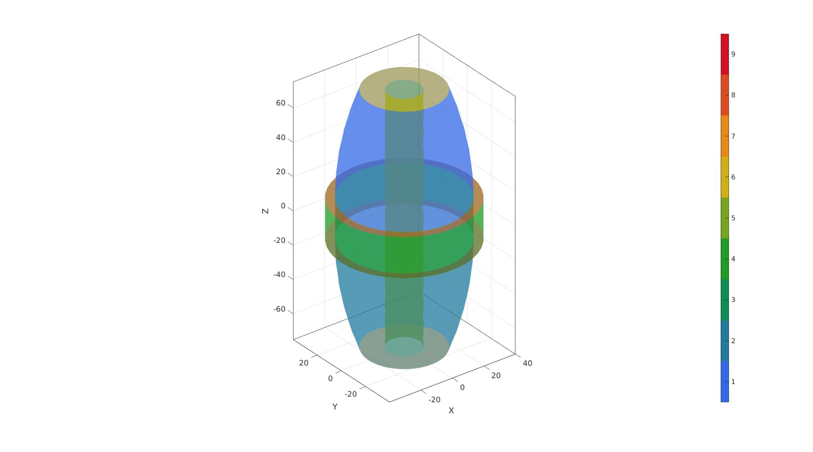
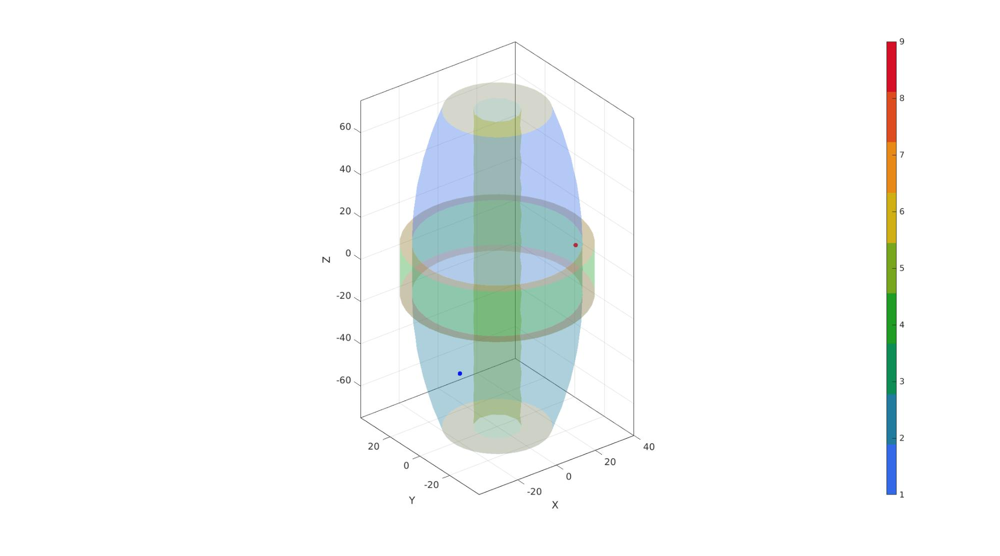
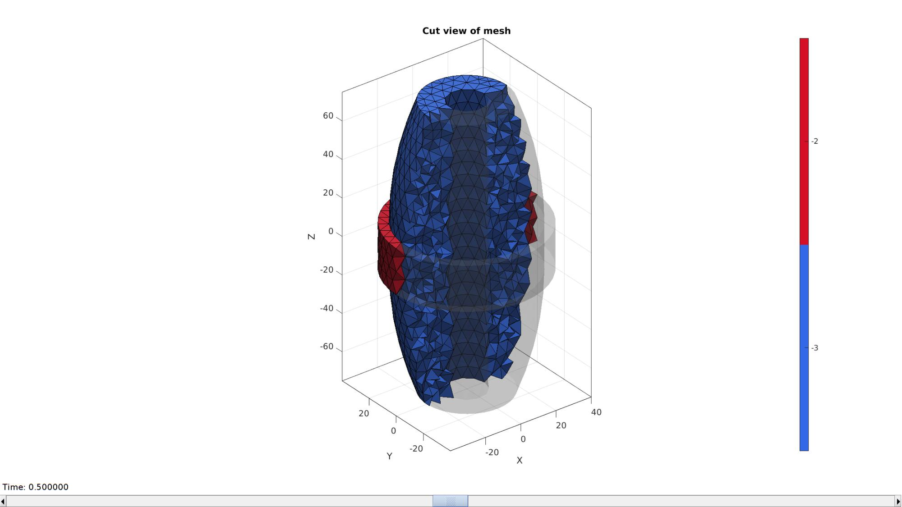
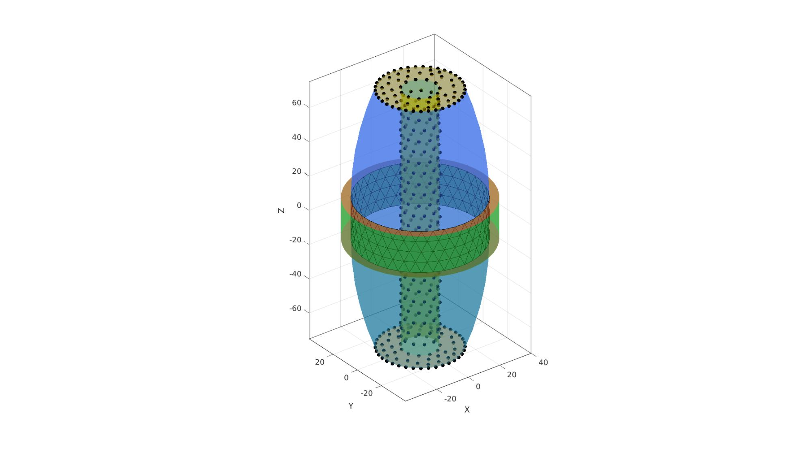

DEMO_febio_0022_multigen_interface_band
Below is a demonstration for:
- Building geometry for limb-like segment with an elastic band wrapped around it
- Defining the boundary conditions
- Coding the febio structure
- Running the model
- Importing and visualizing the displacement results
Contents
- Keywords
- Plot settings
- Control parameters
- Build tissue skin surface top
- Build tissue skin surface bottom
- Build tissue skin surface middle
- Build wrap outer surface
- Build bone surface
- Capping tissue top
- Capping tissue bottom
- Capping wrap top
- Capping wrap bottom
- Visualizing surface geometry
- Joining and merging geometry sets
- Find solid mesh region interior points
- Mesh solid using tetgen
- Visualizing mesh
- Define boundary condition node sets
- Define pressure surface
- Create element sets and material indices
- Defining the FEBio input structure
- Quick viewing of the FEBio input file structure
- Exporting the FEBio input file
- Running the FEBio analysis
- Import FEBio results
Keywords
- febio_spec version 3.0
- febio, FEBio
- indentation
- contact, sliding, sticky, friction
- rigid body constraints
- tetrahedral elements, tet4
- static, solid
- multi-generational
- hyperelastic, Ogden
- displacement logfile
- stress logfile
clear; close all; clc;
Plot settings
fontSize=15; faceAlpha1=0.8; faceAlpha2=0.3; markerSize=40; lineWidth=3; plotColors=gjet(9); lineWidth1=2; markerSize1=25;
Control parameters
% Path names defaultFolder = fileparts(fileparts(mfilename('fullpath'))); savePath=fullfile(defaultFolder,'data','temp'); % Defining file names febioFebFileNamePart='tempModel'; febioFebFileName=fullfile(savePath,[febioFebFileNamePart,'.feb']); %FEB file name febioLogFileName=[febioFebFileNamePart,'.txt']; %FEBio log file name febioLogFileName_disp=[febioFebFileNamePart,'_disp_out.txt']; %Log file name for exporting displacement febioLogFileName_strainEnergy=[febioFebFileNamePart,'_energy_out.txt']; %Log file name for exporting strain energy density %Material parameter set c1=1e-3; %Shear-modulus-like parameter m1=2; %Material parameter setting degree of non-linearity k_factor=1e2; %Bulk modulus factor k=c1*k_factor; %Bulk modulus %Multi-generational properties of band c1_g=[c1/1000 c1*100]; k_g=c1_g*k_factor; % FEA control settings numTimeSteps=6; %Number of time steps desired max_refs=25; %Max reforms max_ups=0; %Set to zero to use full-Newton iterations opt_iter=10; %Optimum number of iterations max_retries=5; %Maximum number of retires dtmin=(1/numTimeSteps)/100; %Minimum time step size dtmax=1/numTimeSteps; %Maximum time step size runMode='external';% 'internal' or 'external' appliedPressure=3e-3; %pressure value % Geometry parameters tissueRadius=35; tissueHeight=150; boneRadius=10; wrapHeight=24; wrapThickness=5; pointSpacing=6; % Aproximate node spacing
Build tissue skin surface top
%Sketching profile ns=150; t=linspace(0,2*pi,ns); t=t(1:end-1); x=tissueRadius*cos(t); y=tissueRadius*sin(t); z=zeros(size(x)); Vc=[x(:) y(:) z(:)]; np=ceil(max(pathLength(Vc))./pointSpacing); [Vc]=evenlySampleCurve(Vc,np,'pchip',1); % Extruding model h=(tissueHeight/2)-wrapHeight/2; cPar.numSteps=round(h/pointSpacing); cPar.numSteps=cPar.numSteps+iseven(cPar.numSteps); cPar.depth=h; cPar.patchType='tri'; cPar.dir=-1; cPar.closeLoopOpt=1; [Fg1,Vg1]=polyExtrude(Vc,cPar); Vg1(:,3)=Vg1(:,3)+tissueHeight/2; [T,R] = cart2pol(Vg1(:,1),Vg1(:,2)); R=R-(tissueRadius/2*((Vg1(:,3)-(wrapHeight/2))/(tissueHeight/2)).^2); [Vg1(:,1),Vg1(:,2)] = pol2cart(T,R); Vg1b=Vg1(cPar.numSteps:cPar.numSteps:end,:); Vg1t=Vg1(1:cPar.numSteps:end,:);
Build tissue skin surface bottom
Fg2=Fg1; Fg2=fliplr(Fg2); Vg2=Vg1; Vg2(:,3)=-Vg2(:,3); Vg2b=Vg2(cPar.numSteps:cPar.numSteps:end,:); Vg2t=Vg2(1:cPar.numSteps:end,:);
Build tissue skin surface middle
% Extruding model h=wrapHeight; cPar.numSteps=round(h/pointSpacing); cPar.numSteps=cPar.numSteps+iseven(cPar.numSteps); cPar.depth=h; cPar.patchType='tri'; cPar.closeLoopOpt=1; Vc_start=Vg1b; Vc_end=Vg2b; [Fg3,Vg3]=polyLoftLinear(Vc_start,Vc_end,cPar); % Vg3(:,3)=Vg3(:,3)+tissueHeight/2; Vg3b=Vg3(cPar.numSteps:cPar.numSteps:end,:); Vg3t=Vg3(1:cPar.numSteps:end,:);
Build wrap outer surface
ns=150; t=linspace(0,2*pi,ns); t=t(1:end-1); x=(tissueRadius+wrapThickness)*cos(t); y=(tissueRadius+wrapThickness)*sin(t); z=zeros(size(x)); Vc=[x(:) y(:) z(:)]; np=ceil(max(pathLength(Vc))./pointSpacing); [Vwt]=evenlySampleCurve(Vc,np,'pchip',1); Vwt(:,3)=mean(Vg3t(:,3)); Vwb=Vwt; Vwb(:,3)=Vwt(:,3)-wrapHeight; h=wrapHeight; cPar.numSteps=round(h/pointSpacing); cPar.numSteps=cPar.numSteps+iseven(cPar.numSteps); cPar.depth=h; cPar.patchType='tri'; cPar.closeLoopOpt=1; Vc_start=Vwt; Vc_end=Vwb; [Fw1,Vw1]=polyLoftLinear(Vc_start,Vc_end,cPar);
Build bone surface
x=boneRadius*cos(t); y=boneRadius*sin(t); z=zeros(size(x)); Vc=[x(:) y(:) z(:)]; np=ceil(max(pathLength(Vc))./pointSpacing); [Vc]=evenlySampleCurve(Vc,np,'pchip',1); % Extruding model cPar.numSteps=round(tissueHeight/pointSpacing); cPar.numSteps=cPar.numSteps+iseven(cPar.numSteps); cPar.depth=tissueHeight; cPar.patchType='tri'; cPar.dir=-1; cPar.closeLoopOpt=1; [Fb,Vb]=polyExtrude(Vc,cPar); Fb=fliplr(Fb); Vb(:,3)=Vb(:,3)+tissueHeight/2; Vbb=Vb(cPar.numSteps:cPar.numSteps:end,:); Vbt=Vb(1:cPar.numSteps:end,:);
Capping tissue top
regionCell={Vg1t(:,[1 2]),Vbt(:,[1 2])};
[Ft,Vt]=regionTriMesh2D(regionCell,pointSpacing,0,0);
Vt(:,3)=mean(Vg1t(:,3));
Ft=fliplr(Ft);
Capping tissue bottom
regionCell={Vg2t(:,[1 2]),Vbb(:,[1 2])};
[Fgb,Vgb]=regionTriMesh2D(regionCell,pointSpacing,0,0);
Vgb(:,3)=mean(Vg2t(:,3));
Capping wrap top
regionCell={Vwt(:,[1 2]),Vg1b(:,[1 2])};
[Fwtt,Vwtt]=regionTriMesh2D(regionCell,pointSpacing,0,0);
Vwtt(:,3)=mean(Vwt(:,3));
Fwtt=fliplr(Fwtt);
Capping wrap bottom
regionCell={Vwb(:,[1 2]),Vg2b(:,[1 2])};
[Fwbb,Vwbb]=regionTriMesh2D(regionCell,pointSpacing,0,0);
Vwbb(:,3)=mean(Vwb(:,3));
Visualizing surface geometry
cFigure; xlabel('X','FontSize',fontSize); ylabel('Y','FontSize',fontSize); zlabel('Z','FontSize',fontSize) hold on; gpatch(Fg1,Vg1,plotColors(1,:),'k'); patchNormPlot(Fg1,Vg1); plotV(Vg1t,'r.-','lineWidth',lineWidth1,'MarkerSize',markerSize1); plotV(Vg1b,'y.-','lineWidth',lineWidth1,'MarkerSize',markerSize1); gpatch(Fg2,Vg2,plotColors(2,:),'k'); patchNormPlot(Fg2,Vg2); plotV(Vg2t,'r.-','lineWidth',lineWidth1,'MarkerSize',markerSize1); plotV(Vg2b,'y.-','lineWidth',lineWidth1,'MarkerSize',markerSize1); gpatch(Fg3,Vg3,plotColors(3,:),'k'); patchNormPlot(Fg3,Vg3); plotV(Vg3t,'r.-','lineWidth',lineWidth1,'MarkerSize',markerSize1); plotV(Vg3b,'y.-','lineWidth',lineWidth1,'MarkerSize',markerSize1); gpatch(Fw1,Vw1,plotColors(4,:),'k'); patchNormPlot(Fw1,Vw1); plotV(Vwt,'g.-','lineWidth',lineWidth1,'MarkerSize',markerSize1); plotV(Vwb,'g.-','lineWidth',lineWidth1,'MarkerSize',markerSize1); gpatch(Fb,Vb,plotColors(5,:),'k'); patchNormPlot(Fb,Vb); plotV(Vbt,'r.-','lineWidth',lineWidth1,'MarkerSize',markerSize1); plotV(Vbb,'y.-','lineWidth',lineWidth1,'MarkerSize',markerSize1); gpatch(Ft,Vt,plotColors(6,:),'k'); patchNormPlot(Ft,Vt); gpatch(Fgb,Vgb,plotColors(7,:),'k'); patchNormPlot(Fgb,Vgb); gpatch(Fwtt,Vwtt,plotColors(8,:),'k'); patchNormPlot(Fwtt,Vwtt); gpatch(Fwbb,Vwbb,plotColors(9,:),'k'); patchNormPlot(Fwbb,Vwbb); axisGeom; colormap(plotColors); colorbar; drawnow;

Joining and merging geometry sets
%Joining sets %Creating color information Cg1=1*ones(size(Fg1,1),1); %Tissue top cylinder Cg2=2*ones(size(Fg2,1),1); %Tissue bottom cylinder Cg3=3*ones(size(Fg3,1),1); %Tissue middle cylinder Cw1=4*ones(size(Fw1,1),1); %Wrap outer cylinder Cb=5*ones(size(Fb,1),1); %Bone cylinder Ct=6*ones(size(Ft,1),1); %Tissue top Cgb=7*ones(size(Fgb,1),1); %Tissue bottom Cwtt=8*ones(size(Fwtt,1),1); %Wrap top Cwbb=9*ones(size(Fwbb,1),1); %Wrap bottom [F,V,C]=joinElementSets({Fg1,Fg2,Fg3,Fw1,Fb,Ft,Fgb,Fwtt,Fwbb},{Vg1,Vg2,Vg3,Vw1,Vb,Vt,Vgb,Vwtt,Vwbb},{Cg1,Cg2,Cg3,Cw1,Cb,Ct,Cgb,Cwtt,Cwbb}); %joining sets together %merging sets [F,V]=mergeVertices(F,V);
cFigure; xlabel('X','FontSize',fontSize); ylabel('Y','FontSize',fontSize); zlabel('Z','FontSize',fontSize) hold on; gpatch(F,V,C,'none',0.5); % patchNormPlot(F,V); axisGeom; colormap(plotColors); icolorbar; drawnow;
Find solid mesh region interior points
logicRegion=ismember(C,[3 4 8 9]); [V_in_1]=getInnerPoint(F(logicRegion,:),V); logicRegion=ismember(C,[1 2 3 5 6 7 ]); [V_in_2]=getInnerPoint(F(logicRegion,:),V); V_regions=[V_in_1;V_in_2];
cFigure; xlabel('X','FontSize',fontSize); ylabel('Y','FontSize',fontSize); zlabel('Z','FontSize',fontSize) hold on; gpatch(F,V,C,'none',0.2); plotV(V_in_1,'r.','MarkerSize',25); plotV(V_in_2,'b.','MarkerSize',25); axisGeom; colormap(plotColors); colorbar; drawnow;
Mesh solid using tetgen
% Create tetgen meshing input structure modelName=fullfile(savePath,'tempModel'); % Regional mesh volume parameter [regionA]=tetVolMeanEst(F,V); %Volume for a regular tet based on edge lengths volumeFactors=(regionA.*ones(size(V_regions,1),1)); inputStruct.stringOpt='-pq1.2AaY'; inputStruct.Faces=F; inputStruct.Nodes=V; inputStruct.holePoints=[]; inputStruct.faceBoundaryMarker=C; %Face boundary markers inputStruct.regionPoints=V_regions; %region points inputStruct.regionA=volumeFactors; %Desired volume for tets inputStruct.minRegionMarker=2; %Minimum region marker inputStruct.modelName=modelName;
Mesh model using tetrahedral elements using tetGen (see: http://wias-berlin.de/software/tetgen/)
[meshOutput]=runTetGen(inputStruct); %Run tetGen
%%%%%%%%%%%%%%%%%%%%%%%%%%%%%%%%%%%%%%%%%%%%% --- TETGEN Tetrahedral meshing --- 20-Apr-2023 10:44:35 %%%%%%%%%%%%%%%%%%%%%%%%%%%%%%%%%%%%%%%%%%%%% --- Writing SMESH file --- 20-Apr-2023 10:44:35 ----> Adding node field ----> Adding facet field ----> Adding holes specification ----> Adding region specification --- Done --- 20-Apr-2023 10:44:35 --- Running TetGen to mesh input boundary--- 20-Apr-2023 10:44:35 Opening /mnt/data/MATLAB/GIBBON/data/temp/tempModel.smesh. Delaunizing vertices... Delaunay seconds: 0.014849 Creating surface mesh ... Surface mesh seconds: 0.002311 Recovering boundaries... Boundary recovery seconds: 0.00435 Removing exterior tetrahedra ... Spreading region attributes. Exterior tets removal seconds: 0.001671 Recovering Delaunayness... Delaunay recovery seconds: 0.002409 Refining mesh... 1956 insertions, added 1569 points, 47341 tetrahedra in queue. 651 insertions, added 477 points, 56522 tetrahedra in queue. 868 insertions, added 552 points, 62664 tetrahedra in queue. 1157 insertions, added 444 points, 40125 tetrahedra in queue. 1542 insertions, added 162 points, 1308 tetrahedra in queue. Refinement seconds: 0.087088 Smoothing vertices... Mesh smoothing seconds: 0.130497 Improving mesh... Mesh improvement seconds: 0.005233 Writing /mnt/data/MATLAB/GIBBON/data/temp/tempModel.1.node. Writing /mnt/data/MATLAB/GIBBON/data/temp/tempModel.1.ele. Writing /mnt/data/MATLAB/GIBBON/data/temp/tempModel.1.face. Writing /mnt/data/MATLAB/GIBBON/data/temp/tempModel.1.edge. Output seconds: 0.049115 Total running seconds: 0.297754 Statistics: Input points: 1468 Input facets: 3010 Input segments: 4478 Input holes: 0 Input regions: 2 Mesh points: 4712 Mesh tetrahedra: 24781 Mesh faces: 50919 Mesh faces on exterior boundary: 2714 Mesh faces on input facets: 3010 Mesh edges on input segments: 4478 Steiner points inside domain: 3244 --- Done --- 20-Apr-2023 10:44:36 %%%%%%%%%%%%%%%%%%%%%%%%%%%%%%%%%%%%%%%%%%%%% --- Importing TetGen files --- 20-Apr-2023 10:44:36 --- Done --- 20-Apr-2023 10:44:36
Visualizing mesh
meshView(meshOutput);
Access model element and patch data
F=meshOutput.faces; V=meshOutput.nodes; C=meshOutput.faceMaterialID; E=meshOutput.elements; CE=meshOutput.elementMaterialID; Fb=meshOutput.facesBoundary; Cb=meshOutput.boundaryMarker;
cFigure; xlabel('X','FontSize',fontSize); ylabel('Y','FontSize',fontSize); zlabel('Z','FontSize',fontSize) hold on; gpatch(Fb,V,Cb); axisGeom; colormap(plotColors) drawnow;
Define boundary condition node sets
logicRigid=ismember(Cb,[5 6 7]); bcSupportList=Fb(logicRigid,:); bcSupportList=unique(bcSupportList(:));
Define pressure surface
F_pressure=fliplr(Fb(Cb==3,:));
Plot boundary condition nodes
cFigure; xlabel('X','FontSize',fontSize); ylabel('Y','FontSize',fontSize); zlabel('Z','FontSize',fontSize) hold on; gpatch(Fb,V,Cb,'none',0.5); plotV(V(bcSupportList,:),'k.','lineWidth',lineWidth1,'MarkerSize',markerSize1); gpatch(F_pressure,V,0.5*ones(1,3),'k'); axisGeom; colormap(plotColors); drawnow;
Create element sets and material indices
%Create material indices elementMaterialIndices=CE; elementMaterialIndices(elementMaterialIndices==-3)=1; elementMaterialIndices(elementMaterialIndices==-2)=2; %Order material sets E1=E(elementMaterialIndices==1,:); %Tissue material E2=E(elementMaterialIndices==2,:); %Wrap material E=[E1;E2];
Defining the FEBio input structure
See also febioStructTemplate and febioStruct2xml and the FEBio user manual.
%Get a template with default settings [febio_spec]=febioStructTemplate; %febio_spec version febio_spec.ATTR.version='4.0'; %Module section febio_spec.Module.ATTR.type='solid'; %Create control structure for use by all steps stepStruct.Control.time_steps=numTimeSteps; stepStruct.Control.step_size=1/numTimeSteps; stepStruct.Control.solver.max_refs=max_refs; stepStruct.Control.time_stepper.dtmin=dtmin; stepStruct.Control.time_stepper.dtmax=dtmax; stepStruct.Control.time_stepper.max_retries=max_retries; stepStruct.Control.time_stepper.opt_iter=opt_iter; %Add template based default settings to proposed control section [stepStruct.Control]=structComplete(stepStruct.Control,febio_spec.Control,1); %Complement provided with default if missing %Remove control field (part of template) since step specific control sections are used febio_spec=rmfield(febio_spec,'Control'); febio_spec.Step.step{1}.Control=stepStruct.Control; febio_spec.Step.step{1}.ATTR.id=1; febio_spec.Step.step{2}.Control=stepStruct.Control; febio_spec.Step.step{2}.ATTR.id=2; %Material section materialName1='Normal_material'; febio_spec.Material.material{1}.ATTR.name=materialName1; febio_spec.Material.material{1}.ATTR.id=1; febio_spec.Material.material{1}.ATTR.type='Ogden unconstrained'; febio_spec.Material.material{1}.c1=c1; febio_spec.Material.material{1}.m1=m1; febio_spec.Material.material{1}.c2=c1; febio_spec.Material.material{1}.m2=-m1; febio_spec.Material.material{1}.cp=k; materialName2='Multigen_material'; febio_spec.Material.material{2}.ATTR.name=materialName2; febio_spec.Material.material{2}.ATTR.id=2; febio_spec.Material.material{2}.ATTR.type='multigeneration'; febio_spec.Material.material{2}.generation{1}.ATTR.id=1; febio_spec.Material.material{2}.generation{1}.start_time=0; febio_spec.Material.material{2}.generation{1}.solid{1}.ATTR.type='Ogden unconstrained'; febio_spec.Material.material{2}.generation{1}.solid{1}.c1=c1_g(1); febio_spec.Material.material{2}.generation{1}.solid{1}.m1=m1; febio_spec.Material.material{2}.generation{1}.solid{1}.c2=c1_g(1); febio_spec.Material.material{2}.generation{1}.solid{1}.m2=-m1; febio_spec.Material.material{2}.generation{1}.solid{1}.cp=k_g(1); febio_spec.Material.material{2}.generation{2}.ATTR.id=2; febio_spec.Material.material{2}.generation{2}.start_time=1; febio_spec.Material.material{2}.generation{2}.solid{1}.ATTR.type='Ogden unconstrained'; febio_spec.Material.material{2}.generation{2}.solid{1}.c1=c1_g(2); febio_spec.Material.material{2}.generation{2}.solid{1}.m1=m1; febio_spec.Material.material{2}.generation{2}.solid{1}.c2=c1_g(2); febio_spec.Material.material{2}.generation{2}.solid{1}.m2=-m1; febio_spec.Material.material{2}.generation{2}.solid{1}.cp=k_g(2); %Mesh section % -> Nodes febio_spec.Mesh.Nodes{1}.ATTR.name='nodeSet_all'; %The node set name febio_spec.Mesh.Nodes{1}.node.ATTR.id=(1:size(V,1))'; %The node id's febio_spec.Mesh.Nodes{1}.node.VAL=V; %The nodel coordinates % -> Elements partName1='Part1'; febio_spec.Mesh.Elements{1}.ATTR.name=partName1; %Name of this part febio_spec.Mesh.Elements{1}.ATTR.type='tet4'; %Element type febio_spec.Mesh.Elements{1}.elem.ATTR.id=(1:1:size(E1,1))'; %Element id's febio_spec.Mesh.Elements{1}.elem.VAL=E1; partName2='Part2'; febio_spec.Mesh.Elements{2}.ATTR.name=partName2; %Name of this part febio_spec.Mesh.Elements{2}.ATTR.type='tet4'; %Element type febio_spec.Mesh.Elements{2}.elem.ATTR.id=size(E1,1)+(1:1:size(E2,1))'; %Element id's febio_spec.Mesh.Elements{2}.elem.VAL=E2; % -> NodeSets nodeSetName1='bcSupportList'; febio_spec.Mesh.NodeSet{1}.ATTR.name=nodeSetName1; febio_spec.Mesh.NodeSet{1}.VAL=mrow(bcSupportList); % -> Surfaces surfaceName1='LoadedSurface'; febio_spec.Mesh.Surface{1}.ATTR.name=surfaceName1; febio_spec.Mesh.Surface{1}.tri3.ATTR.id=(1:1:size(F_pressure,1))'; febio_spec.Mesh.Surface{1}.tri3.VAL=F_pressure; %MeshDomains section febio_spec.MeshDomains.SolidDomain{1}.ATTR.name=partName1; febio_spec.MeshDomains.SolidDomain{1}.ATTR.mat=materialName1; febio_spec.MeshDomains.SolidDomain{2}.ATTR.name=partName2; febio_spec.MeshDomains.SolidDomain{2}.ATTR.mat=materialName2; %Boundary condition section % -> Fix boundary conditions febio_spec.Boundary.bc{1}.ATTR.name='zero_displacement_xyz'; febio_spec.Boundary.bc{1}.ATTR.type='zero displacement'; febio_spec.Boundary.bc{1}.ATTR.node_set=nodeSetName1; febio_spec.Boundary.bc{1}.x_dof=1; febio_spec.Boundary.bc{1}.y_dof=1; febio_spec.Boundary.bc{1}.z_dof=1; %Loads section % -> Surface load febio_spec.Loads.surface_load{1}.ATTR.type='pressure'; febio_spec.Loads.surface_load{1}.ATTR.surface=surfaceName1; febio_spec.Loads.surface_load{1}.pressure.ATTR.lc=1; febio_spec.Loads.surface_load{1}.pressure.VAL=appliedPressure; febio_spec.Loads.surface_load{1}.symmetric_stiffness=1; %LoadData section % -> load_controller febio_spec.LoadData.load_controller{1}.ATTR.name='LC_1'; febio_spec.LoadData.load_controller{1}.ATTR.id=1; febio_spec.LoadData.load_controller{1}.ATTR.type='loadcurve'; febio_spec.LoadData.load_controller{1}.interpolate='LINEAR'; %febio_spec.LoadData.load_controller{1}.extend='CONSTANT'; febio_spec.LoadData.load_controller{1}.points.pt.VAL=[0 0; 1 1; 2 0]; %Output section % -> log file febio_spec.Output.logfile.ATTR.file=febioLogFileName; febio_spec.Output.logfile.node_data{1}.ATTR.file=febioLogFileName_disp; febio_spec.Output.logfile.node_data{1}.ATTR.data='ux;uy;uz'; febio_spec.Output.logfile.node_data{1}.ATTR.delim=','; febio_spec.Output.logfile.element_data{1}.ATTR.file=febioLogFileName_strainEnergy; febio_spec.Output.logfile.element_data{1}.ATTR.data='sed'; febio_spec.Output.logfile.element_data{1}.ATTR.delim=',';
Quick viewing of the FEBio input file structure
The febView function can be used to view the xml structure in a MATLAB figure window.
febView(febio_spec); %Viewing the febio file
Exporting the FEBio input file
Exporting the febio_spec structure to an FEBio input file is done using the febioStruct2xml function.
febioStruct2xml(febio_spec,febioFebFileName); %Exporting to file and domNode
Running the FEBio analysis
To run the analysis defined by the created FEBio input file the runMonitorFEBio function is used. The input for this function is a structure defining job settings e.g. the FEBio input file name. The optional output runFlag informs the user if the analysis was run succesfully.
febioAnalysis.run_filename=febioFebFileName; %The input file name febioAnalysis.run_logname=febioLogFileName; %The name for the log file febioAnalysis.disp_on=1; %Display information on the command window febioAnalysis.runMode=runMode; [runFlag]=runMonitorFEBio(febioAnalysis);%START FEBio NOW!!!!!!!!
%%%%%%%%%%%%%%%%%%%%%%%%%%%%%%%%%%%%%%%%%%%%%%%%%%%%%%%%%%%%%%%%%%%%%%%%%%%
--------> RUNNING/MONITORING FEBIO JOB <-------- 20-Apr-2023 10:44:43
FEBio path: /home/kevin/FEBioStudio2/bin/febio4
# Attempt removal of existing log files 20-Apr-2023 10:44:43
* Removal succesful 20-Apr-2023 10:44:43
# Attempt removal of existing .xplt files 20-Apr-2023 10:44:43
* Removal succesful 20-Apr-2023 10:44:43
# Starting FEBio... 20-Apr-2023 10:44:43
Max. total analysis time is: Inf s
* Waiting for log file creation 20-Apr-2023 10:44:43
Max. wait time: 30 s
* Log file found. 20-Apr-2023 10:44:43
# Parsing log file... 20-Apr-2023 10:44:43
number of iterations : 4 20-Apr-2023 10:44:45
number of reformations : 4 20-Apr-2023 10:44:45
------- converged at time : 0.166667 20-Apr-2023 10:44:45
number of iterations : 4 20-Apr-2023 10:44:45
number of reformations : 4 20-Apr-2023 10:44:45
------- converged at time : 0.333333 20-Apr-2023 10:44:45
number of iterations : 5 20-Apr-2023 10:44:46
number of reformations : 5 20-Apr-2023 10:44:46
------- converged at time : 0.5 20-Apr-2023 10:44:46
number of iterations : 6 20-Apr-2023 10:44:48
number of reformations : 6 20-Apr-2023 10:44:48
------- converged at time : 0.666667 20-Apr-2023 10:44:48
number of iterations : 6 20-Apr-2023 10:44:49
number of reformations : 6 20-Apr-2023 10:44:49
------- converged at time : 0.833333 20-Apr-2023 10:44:49
number of iterations : 4 20-Apr-2023 10:44:50
number of reformations : 4 20-Apr-2023 10:44:50
------- converged at time : 1 20-Apr-2023 10:44:50
number of iterations : 4 20-Apr-2023 10:44:51
number of reformations : 4 20-Apr-2023 10:44:51
------- converged at time : 1.16667 20-Apr-2023 10:44:51
number of iterations : 4 20-Apr-2023 10:44:52
number of reformations : 4 20-Apr-2023 10:44:52
------- converged at time : 1.33333 20-Apr-2023 10:44:52
number of iterations : 4 20-Apr-2023 10:44:53
number of reformations : 4 20-Apr-2023 10:44:53
------- converged at time : 1.5 20-Apr-2023 10:44:53
number of iterations : 3 20-Apr-2023 10:44:53
number of reformations : 3 20-Apr-2023 10:44:53
------- converged at time : 1.66667 20-Apr-2023 10:44:53
number of iterations : 3 20-Apr-2023 10:44:54
number of reformations : 3 20-Apr-2023 10:44:54
------- converged at time : 1.83333 20-Apr-2023 10:44:54
number of iterations : 3 20-Apr-2023 10:44:55
number of reformations : 3 20-Apr-2023 10:44:55
------- converged at time : 2 20-Apr-2023 10:44:55
Elapsed time : 0:00:12 20-Apr-2023 10:44:55
N O R M A L T E R M I N A T I O N
# Done 20-Apr-2023 10:44:55
%%%%%%%%%%%%%%%%%%%%%%%%%%%%%%%%%%%%%%%%%%%%%%%%%%%%%%%%%%%%%%%%%%%%%%%%%%%
Import FEBio results
if runFlag==1 %i.e. a succesful run
Importing nodal displacements from a log file
dataStruct=importFEBio_logfile(fullfile(savePath,febioLogFileName_disp),0,1);
%Access data
N_disp_mat=dataStruct.data; %Displacement
timeVec=dataStruct.time; %Time
%Create deformed coordinate set
V_DEF=N_disp_mat+repmat(V,[1 1 size(N_disp_mat,3)]);
Importing element stress from a log file
dataStruct=importFEBio_logfile(fullfile(savePath,febioLogFileName_strainEnergy),0,1);
%Access data
E_energy=dataStruct.data;
Plotting the simulated results using anim8 to visualize and animate deformations
c1_plot=c1*ones(size(timeVec));
cg_plot=c1_g(1)*ones(size(timeVec));
cg_plot(timeVec>=1)=c1_g(2);
[CV]=faceToVertexMeasure(E,V,E_energy(:,:,end));
% Create basic view and store graphics handle to initiate animation
hf=cFigure; %Open figure
gtitle([febioFebFileNamePart,': Press play to animate']);
subplot(1,2,1); hold on;
title('Ogden parameter c_1');
xlabel('Time'); ylabel('c_1');
plot(timeVec,c1_plot,'b-','lineWidth',2);
plot(timeVec,cg_plot,'r-','lineWidth',2);
hp1=plot(timeVec(1),c1_plot(1),'b.','MarkerSize',50);
hp2=plot(timeVec(1),cg_plot(1),'r.','MarkerSize',50);
legend([hp1 hp2],'Material 1','Material 2');
axis tight; axis square; set(gca,'fontsize',fontSize);
grid on;
subplot(1,2,2); hold on;
hp3=gpatch(Fb,V_DEF(:,:,end),CV,'k',1); %Add graphics object to animate
hp3.FaceColor='interp';
colormap(gjet(250)); hc=colorbar;
caxis([0 max(E_energy(:))]/10);
axisGeom(gca,fontSize);
axis(axisLim(V_DEF)); %Set axis limits statically
axis manual;
camlight headlight;
drawnow;
% Set up animation features
animStruct.Time=timeVec; %The time vector
for qt=1:1:size(N_disp_mat,3) %Loop over time increments
DN=N_disp_mat(:,:,qt); %Current displacement
DN_magnitude=sqrt(sum(DN.^2,2)); %Current displacement magnitude
[CV]=faceToVertexMeasure(E,V,E_energy(:,:,qt));
%Set entries in animation structure
animStruct.Handles{qt}=[hp3 hp3 hp1 hp1 hp2 hp2]; %Handles of objects to animate
animStruct.Props{qt}={'Vertices','CData','XData','YData','XData','YData'}; %Properties of objects to animate
animStruct.Set{qt}={V_DEF(:,:,qt),CV,timeVec(qt),c1_plot(qt),timeVec(qt),cg_plot(qt)}; %Property values for to set in order to animate
end
anim8(hf,animStruct); %Initiate animation feature
drawnow;

end

GIBBON www.gibboncode.org
Kevin Mattheus Moerman, gibbon.toolbox@gmail.com
GIBBON footer text
License: https://github.com/gibbonCode/GIBBON/blob/master/LICENSE
GIBBON: The Geometry and Image-based Bioengineering add-On. A toolbox for image segmentation, image-based modeling, meshing, and finite element analysis.
Copyright (C) 2006-2022 Kevin Mattheus Moerman and the GIBBON contributors
This program is free software: you can redistribute it and/or modify it under the terms of the GNU General Public License as published by the Free Software Foundation, either version 3 of the License, or (at your option) any later version.
This program is distributed in the hope that it will be useful, but WITHOUT ANY WARRANTY; without even the implied warranty of MERCHANTABILITY or FITNESS FOR A PARTICULAR PURPOSE. See the GNU General Public License for more details.
You should have received a copy of the GNU General Public License along with this program. If not, see http://www.gnu.org/licenses/.